Fun with
Flow Models.
A visual exploration of pretrained flow generation and image editing, followed by flow matching trained from scratch on MNIST.
Project roadmap & Gradescope section index
Every experiment is labeled with an explicit A / B prefix and the original numbered subsection. Use the matching heading when assigning PDF pages to Gradescope questions. Each result image comes from the supplied experiment archives, not from an illustrative substitute.
Part A uses pretrained PixNerd at 512 × 512; Part B trains UNet-based denoisers and flow-matching models on MNIST. The code is included alongside this site as parta.ipynb and partb.ipynb.
A 1.1 Constructing Noisy Training Inputs
Visualizing the forward interpolation process.
Method & Implementation
Given a clean personal photograph x₁ and a fixed Gaussian noise tensor ε, I implemented xₜ = (1 − t)ε + tx₁. I used the same noise realization at all three timestamps so differences reflect t rather than independent random samples.
512 × 512 RGB; t = {0.25, 0.50, 0.75}; one fixed ε.
Results & Discussion
As t increases from 0.25 to 0.75, the original image contributes more strongly and recognizable spatial structure is retained. Unlike additive noise, this interpolation also scales the image by t.
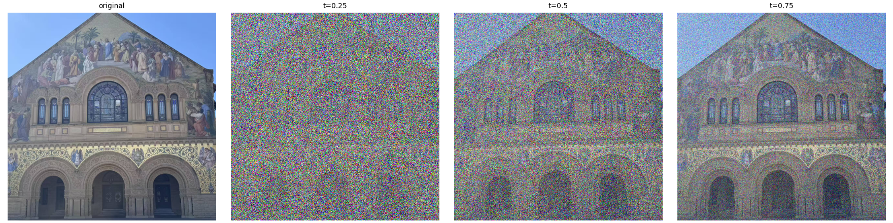
A 1.2 Classical Denoising
Gaussian blur as a non-learned baseline.
Method & Implementation
I first compensated for the image amplitude by dividing each interpolated image by t, then applied Gaussian blur. Blur strength was selected to balance noise reduction against loss of image detail.
Same personal image and noise as A 1.1; Gaussian smoothing on xₜ/t.
Results & Discussion
For t = 0.25 the noise is severe and smoothing loses fine detail. At larger t, the original edges become easier to preserve. Gaussian filtering cannot recreate semantic detail destroyed by noise.
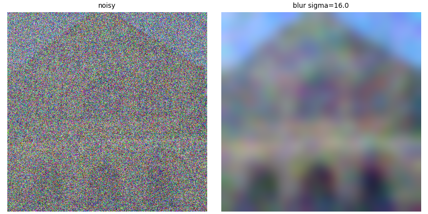
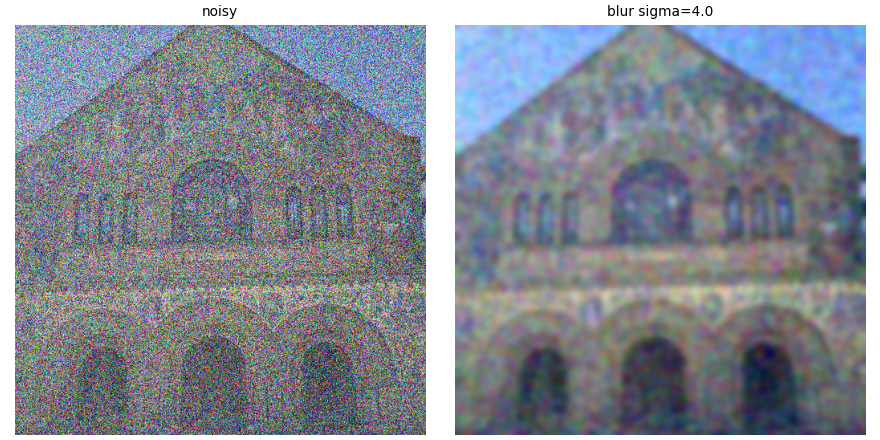
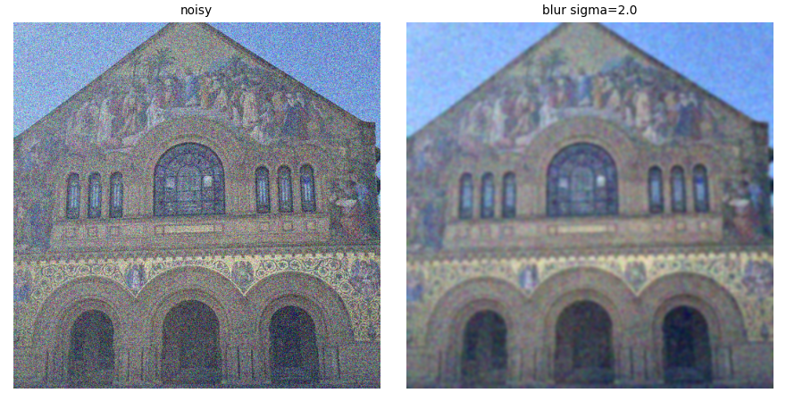
A 1.3 One-Step Denoising
Predicting the clean endpoint with a single model evaluation.
Method & Implementation
With the pretrained PixNerd velocity predictor and the text condition “a high quality photo,” I estimated x̂₁ = xₜ + (1 − t)vθ(xₜ,t,c). Each estimate uses only one velocity prediction.
t = {0.25, 0.50, 0.75}; prompt: “a high quality photo”.
Results & Discussion
The learned prior can reconstruct coherent image content, especially at larger t, while one-step extrapolation may alter details when the input is highly corrupted. This motivates iterative sampling.
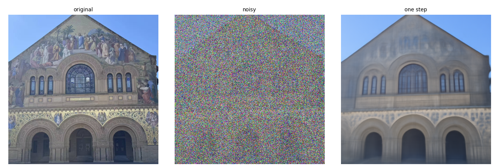
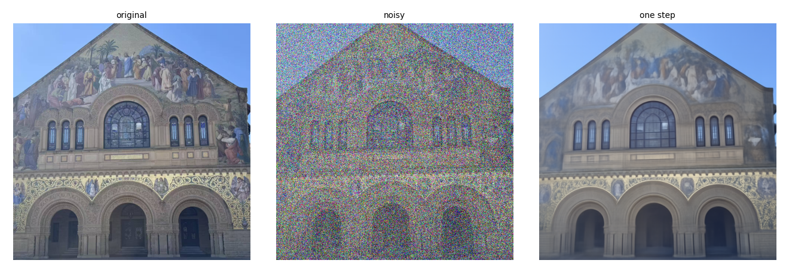
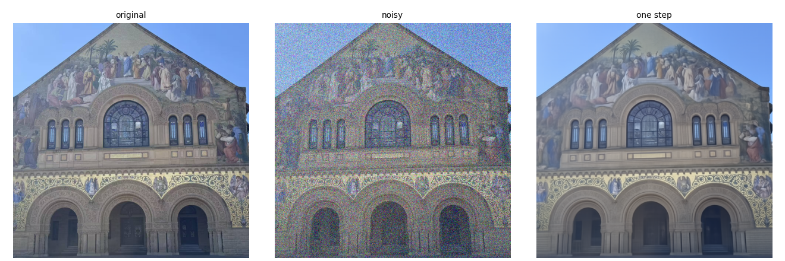
A 1.4 Visualizing Velocity
Predicted updates versus ground-truth updates.
Method & Implementation
I computed the predicted update (1 − t)vθ and the exact update (1 − t)(x₁ − ε). Per-pixel RGB root-mean-square differences between these updates form an error heatmap, computed before any display clipping.
Same RGB display range across predicted/true update maps; shared error-map limits across times.
Results & Discussion
The plots show how the model’s learned correction differs from the straight-path target. Residual errors become visible in the heatmaps, particularly in regions where the model must infer scene structure.
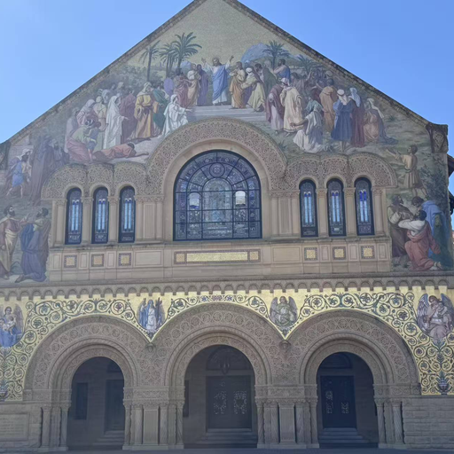
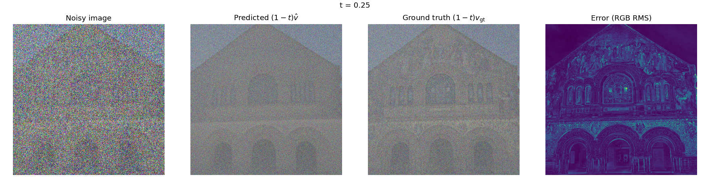
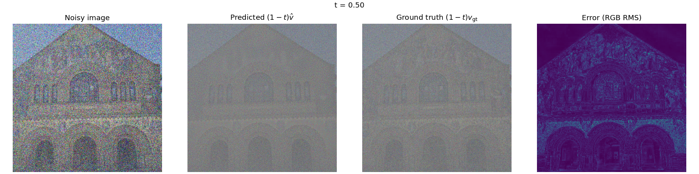
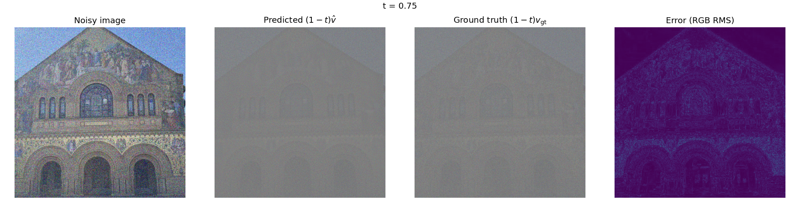
A 1.5 Iterative Denoising with Euler Sampling
Following a learned velocity field in small increments.
Method & Implementation
I implemented Euler updates xₜ₊ₕ = xₜ + hvθ(xₜ,t,c), recomputing the velocity after every step. Starting from the saved t = 0.50 noisy input, the sampler takes 25 steps of h = 0.02 to reach t = 1.
Starting time t = 0.50; h = 0.02; 25 steps; fixed prompt.
Results & Discussion
The trajectory shows progressive refinement. Compared with a single extrapolation and Gaussian smoothing, iterative sampling can adjust its predicted direction as the reconstructed image evolves.
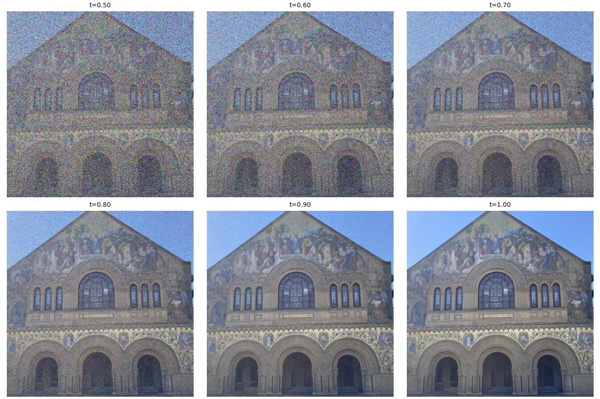
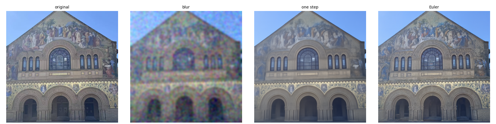
A 1.6 Generating Images from Noise
Unconditional-looking generation with a generic positive text prompt.
Method & Implementation
To generate without an input photograph, I initialized x₀ as independent Gaussian noise and integrated the pretrained conditional velocity from t = 0 to 1 using Euler steps. All samples use the prompt “a high quality photo.”
Five fixed independent seeds; h = 0.02; no additional CFG guidance.
Results & Discussion
The five seeds produce different subjects and compositions. With only a broad prompt, the model has significant freedom and may display subject biases; sample quality can vary.


A 2.1 Classifier-Free Guidance
Using conditional and null-prompt velocity predictions.
Method & Implementation
I implemented vCFG = vc + w(vc − vu), where vc and vu are evaluated at the same xₜ and t with the desired text prompt and the empty-string prompt, respectively. Both guided and unguided samplers use matching initial seeds for comparison.
w = 7; Euler step h = 0.02; same five initial seeds as A 1.6.
Results & Discussion
Guidance generally strengthens image quality and alignment with “a high quality photo,” though stronger steering can reduce diversity. The matched-seed comparison isolates the effect of guidance.


A 3.1 Image-to-Image Editing
Projecting photographs, a web image and drawings through a flow prior.
Method & Implementation
I mixed each input with Gaussian noise at seven starting times, then denoised with CFG-guided Euler sampling and the generic photo prompt. I evaluated the Campanile, two personal photographs (church facade and shoreline commuter train), one web image, and two hand drawings.
t_start = {0.02, 0.04, 0.06, 0.10, 0.14, 0.25, 0.50}; CFG w = 7; h = 0.02; “a high quality photo”.
Results & Discussion
Small starting times discard much of the source image and invite major semantic reinterpretation. As t increases, composition and original detail are increasingly preserved. The drawings demonstrate the model’s ability to turn simplified non-photorealistic inputs into more realistic imagery.

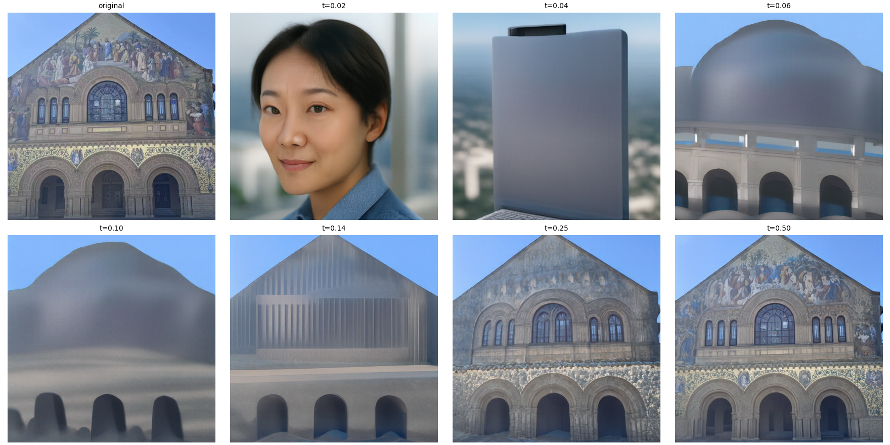
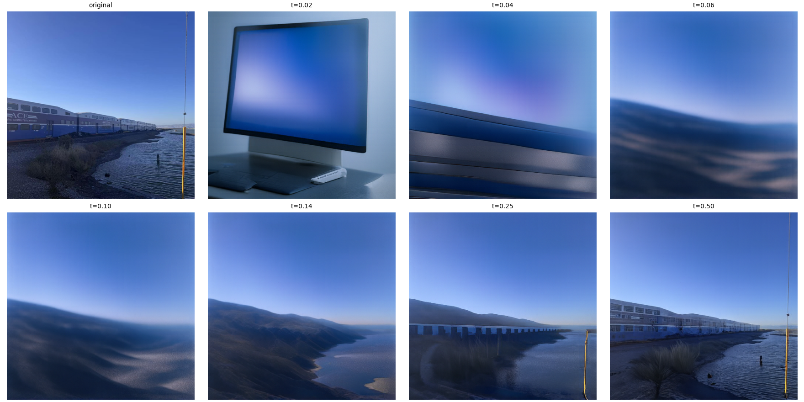
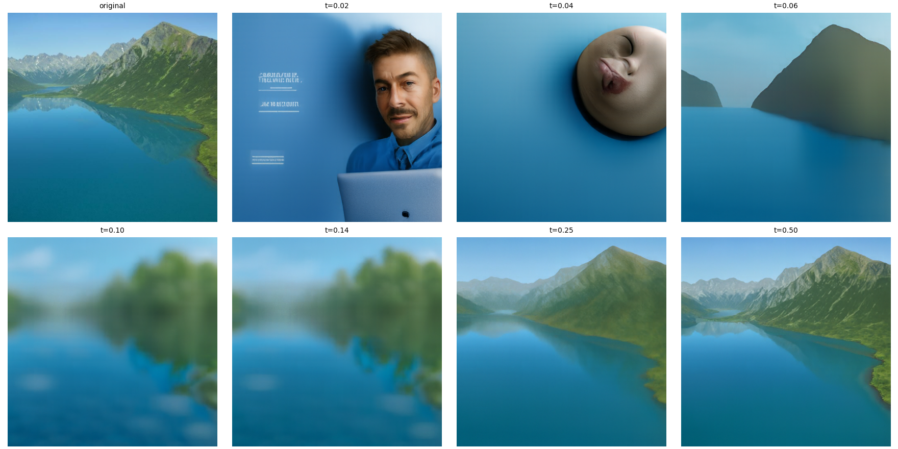
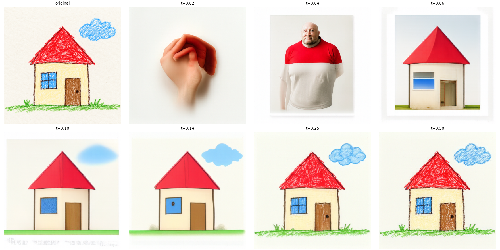
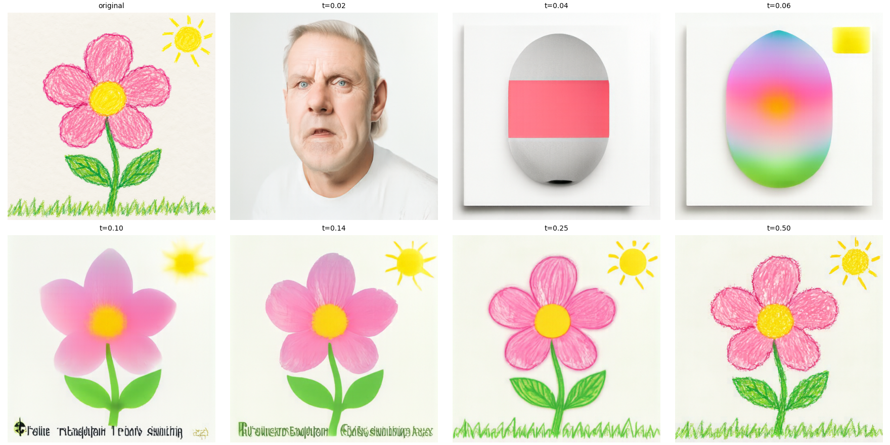
A 3.2 Text-Guided Image Editing
Changing scene semantics while controlling source preservation.
Method & Implementation
I replaced the generic prompt with a target description for each input: Campanile → “a photograph of a rocket on a launch pad”; church → “a photograph of a magical castle with glowing windows”; train → “a photograph of a futuristic spaceship flying over the ocean.” I repeated the seven-time sweep for each image.
Seven starting times t_start = {0.02, 0.04, 0.06, 0.10, 0.14, 0.25, 0.50}; w = 7; h = 0.02.
Results & Discussion
The rocket takes over the tower at smaller t, while high t restores the original Campanile. The church becomes a luminous fairytale castle and the train becomes a spacecraft; both transitions gradually restore source geometry as t increases. The experiments clearly show the tension between prompt adherence and input fidelity.

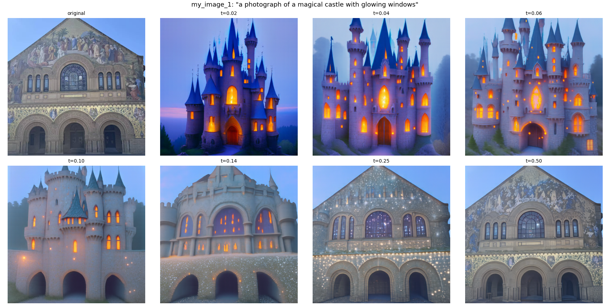
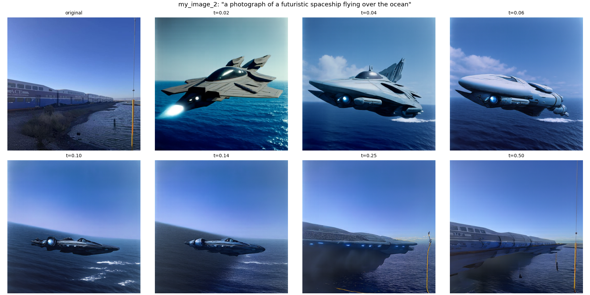
A 3.3 Visual Anagrams
One image, two interpretations under a 180° rotation.
Method & Implementation
For each Euler step, I evaluated CFG velocity on the current image with prompt A and on the 180°-rotated image with prompt B. I rotated the second velocity back into the original orientation, averaged the velocities, and updated the image.
Two prompt pairs; rotate across both spatial axes; CFG w = 7; Euler h = 0.02.
Results & Discussion
Both pairs create interpretable changes under rotation: an old man becomes people gathered around a campfire, and a snowy mountain village becomes a horse. Features and tonal patterns are shared between the two interpretations.


A 3.4 Hybrid Images
Blending low- and high-frequency velocity predictions.
Method & Implementation
At each time step, I combined lowpass(vA) with the high-frequency residual vB − lowpass(vB). Prompt A supplies coarse, distant-view structure; prompt B supplies nearby details. The mixed velocity is then integrated with the Euler sampler.
Two lithograph prompt pairs; low-pass / high-pass velocity mixing; CFG w = 7; h = 0.02.
Results & Discussion
Full-size images strongly depict a waterfall and a forest. At thumbnail scale, the intended skull and cat remain comparatively subtle. This is a useful limitation: frequency-space mixing does not guarantee equally strong semantic recognition at both scales.
Hybrid 1 — Waterfall / Skull
Close-view prompt: “a lithograph of a waterfall” · Distant-view prompt: “a lithograph of a skull”

DISTANT-VIEW TEST · REDUCED PREVIEW
Step away from the screen or view this image at its small displayed size. This is the same generated image, reduced to emphasize its coarse spatial structure.
The waterfall is readily recognizable at full resolution. The skull is a much weaker low-frequency reading; viewing the reduced preview from farther away may help, but the skull is not reliably distinct.
Hybrid 2 — Forest / Cat
Close-view prompt: “a lithograph of a forest” · Distant-view prompt: “a lithograph of a cat”

DISTANT-VIEW TEST · REDUCED PREVIEW
Step away from the screen or view this image at its small displayed size. This is the same generated image, reduced to emphasize its coarse spatial structure.
The forest occupies the fine-scale texture. The intended cat appears only weakly at small scale; the result illustrates the challenge of preserving both semantic concepts.
Note: The reduced previews are not separate generations. Both prompt pairs are included. The intended skull and cat are difficult to recognize in these particular samples, so the visual limitation is reported rather than overstated.
↑ Back to contentsB 1.1 Implementing the UNet
A convolutional encoder–decoder with skip connections.
Method & Implementation
I implemented Conv, DownConv, UpConv, Flatten, Unflatten and their composite blocks in PyTorch, then assembled an unconditional UNet. The encoder reduces the 28×28 resolution to a 7×7 bottleneck; the decoder upsamples and concatenates matching-resolution features through skip connections.
Convolution + batch normalization + GELU; average pooling to 1×1; transposed convolution expansion; skip connections.
Results & Discussion
The network maps single-channel MNIST inputs back to the same 1×28×28 spatial shape. Skip connections preserve localized digit strokes while deeper layers extract broader structure. This architecture serves as the basis of subsequent denoising and flow matching experiments.
B 1.2 Using the UNet to Train a Denoiser
Noise process before one-step reconstruction.
Method & Implementation
For each clean MNIST digit x, I drew ε ~ N(0,I) and constructed noisy images z = x + σε at σ = 0, 0.2, 0.4, 0.5, 0.6, 0.8, 1.0.
Pixel values x in [0,1]; one illustrative digit across σ values.
Results & Discussion
The noise amplitude visibly increases with σ. While the digit remains recognizable at low σ, the image becomes increasingly corrupted at high σ.
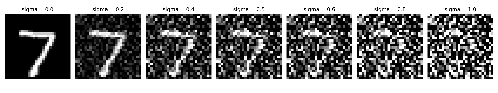
B 1.2.1 Training the Single-Step Denoiser
Learning to reconstruct clean digits at fixed noise σ = 0.5.
Method & Implementation
I trained a fresh UNet to minimize pixelwise mean-squared error between predicted clean digits and original MNIST images. New Gaussian noise was sampled for each training batch. I visualized fixed test examples after epochs 1 and 5.
MNIST train split; batch 256; D = 128; σ = 0.5; Adam learning rate 10⁻⁴; 5 epochs.
Results & Discussion
The predicted digit strokes become clearer and less noisy by epoch 5. Training MSE declines over the five-epoch run, indicating the denoiser learns a robust mapping near its training noise level.
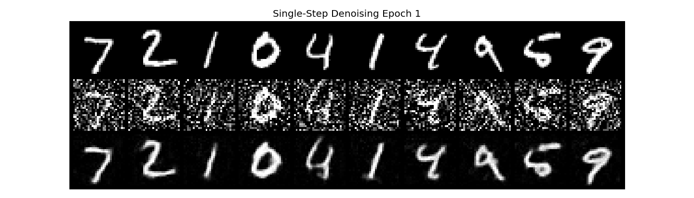
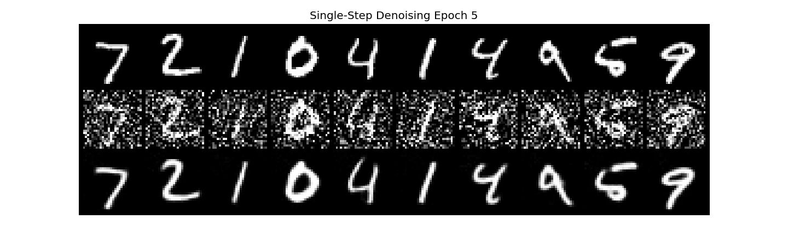
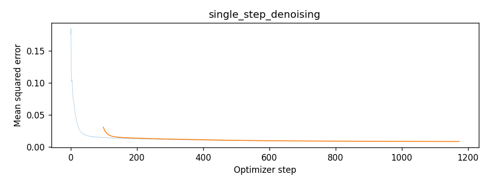
B 1.2.2 Out-of-Distribution Testing
Assessing transfer across unseen noise levels.
Method & Implementation
I held the trained σ = 0.5 denoising model fixed and evaluated the same ten MNIST test images with σ = {0, 0.2, 0.4, 0.5, 0.6, 0.8, 1.0}.
Model trained only at σ = 0.5; seven test noise levels.
Results & Discussion
Outputs remain mostly legible near the training level, while higher σ creates distortions, false strokes and background artifacts. The experiment shows that a denoiser optimized at one noise magnitude does not generalize uniformly to substantially noisier inputs.
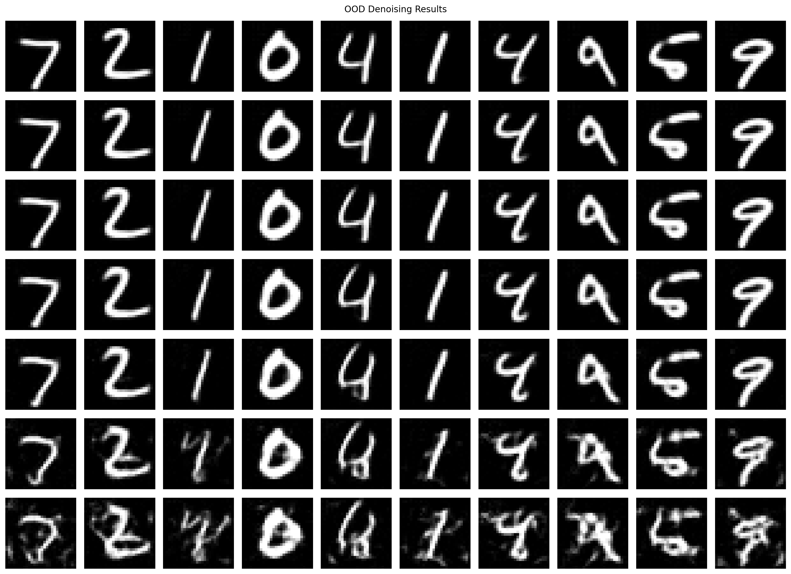
B 1.2.3 Denoising Pure Noise
Exploring the failure of one-step MSE generation.
Method & Implementation
I trained a new UNet on independent standard Gaussian noise as input and MNIST images as targets, using the same single-step regression objective. Held-out predictions and a training loss curve were saved.
Fresh D = 128 UNet; batch 256; Adam 10⁻⁴; 5 epochs; input ε ~ N(0,I).
Results & Discussion
Generated outputs converge to nearly identical blurry digit-like shapes regardless of the input noise. Because the noise contains no information about target identity, the MSE-optimal prediction approaches the dataset mean E[x], rather than a diverse sample of digits.
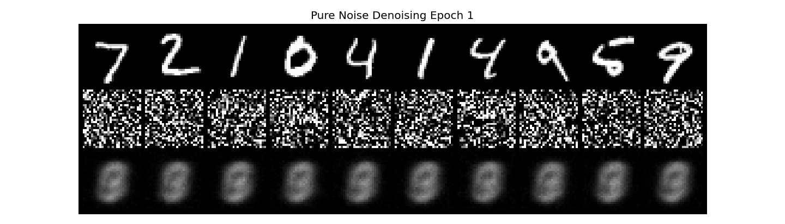
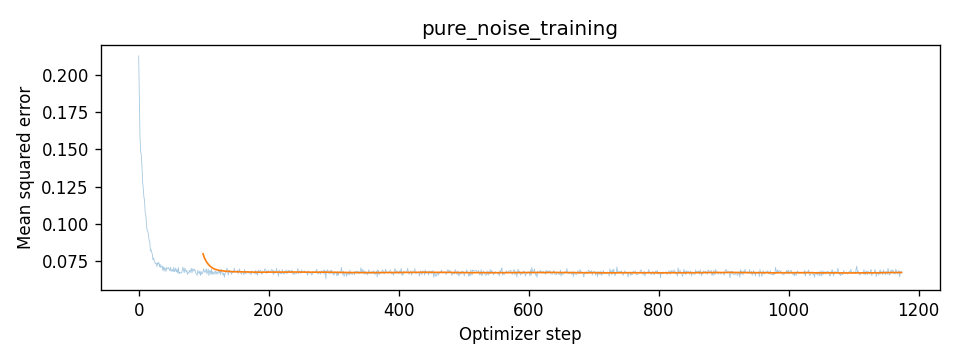
B 2.1 Adding Time Conditioning
A velocity-predicting UNet indexed by normalized time.
Method & Implementation
I added fully connected embedding blocks for a scalar t in [0,1]. These embeddings modulate the decoder feature maps, allowing the same network to adapt its predicted velocity to different points of the noise-to-image trajectory.
Two time embeddings; flow-matching state xₜ=(1−t)x₀+tx₁; target velocity x₁−x₀.
Results & Discussion
Unlike the one-step denoiser, this model predicts a flow field uθ(xₜ,t), not the clean image. The conditioning supports multi-step integration that gradually turns Gaussian noise into a digit.
B 2.2 Training the Time-Conditioned UNet
Learning an unconditional flow-matching velocity field.
Method & Implementation
I sampled clean digits x₁, Gaussian noise x₀ and random t for each batch. I trained a UNet to match the target velocity x₁−x₀ with MSE, using Adam and exponentially decaying learning rate after each epoch.
D = 64; batch 64; initial lr 0.01; ExponentialLR γ=0.1^(1/10); 10 epochs.
Results & Discussion
The training loss falls sharply early and then stabilizes near a lower error plateau. This suggests the predicted velocity increasingly approximates useful directions toward the MNIST image distribution.
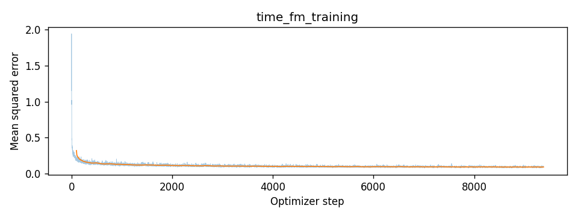
B 2.3 Sampling from the Time-Conditioned UNet
Generating digits by Euler integration.
Method & Implementation
From independently sampled standard Gaussian states, I integrated the learned time-conditioned velocity through 50 Euler steps. I sampled the same fixed seeds using epoch-1, epoch-5 and epoch-10 checkpoints.
50 Euler steps; matched sampling seeds; checkpoints at epochs 1, 5, 10.
Results & Discussion
By epoch 1 the sampler already produces partial digit shapes with noise and broken strokes. Epochs 5 and 10 yield more recognizable numbers and less background noise, though some malformed digits remain; this is expected without explicit class control.
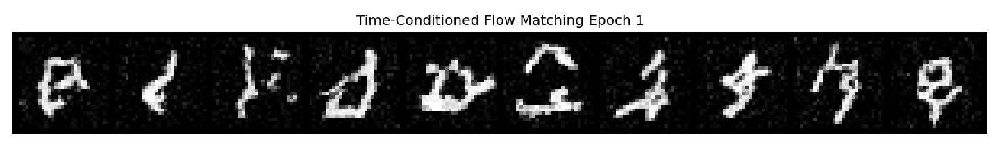
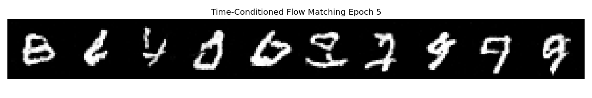
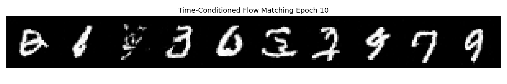
B 2.4 Adding Class Conditioning
Steering generation with a digit label.
Method & Implementation
I extended the time-conditioned UNet with two class embedding blocks. Digit labels were converted to 10D one-hot vectors, and a random class mask removed conditioning 10% of the time during training. Conditioning features modulate decoder representations together with time embeddings.
One-hot classes 0–9; p_uncond = 0.1; D = 64.
Results & Discussion
The condition-aware model can be sampled for a requested digit rather than relying on a random unlabelled output. The dropped-label examples train an unconditional branch used by CFG during inference.
B 2.5 Training the Class-Conditioned UNet
Comparing scheduled and fixed learning-rate optimization.
Method & Implementation
I trained class-conditioned Flow Matching models on the MNIST training split, including 10% conditional dropout. The baseline used Adam at initial lr 0.01 with exponential decay; a separate comparison run omitted the scheduler and used a constant lr 0.001. Both used the same objective and number of epochs.
10 epochs; batch 64; D=64; p_uncond=0.1; scheduler initial lr 0.01, γ=0.1^(1/10); no-scheduler constant lr 0.001.
Results & Discussion
Both models achieved strong class-conditional behavior. The provided loss comparison documents the optimization trajectories; because the learning-rate schedule and fixed learning-rate magnitude both differ, any observed performance difference should be interpreted as a comparison of these training configurations, not an isolated causal estimate of scheduler use.
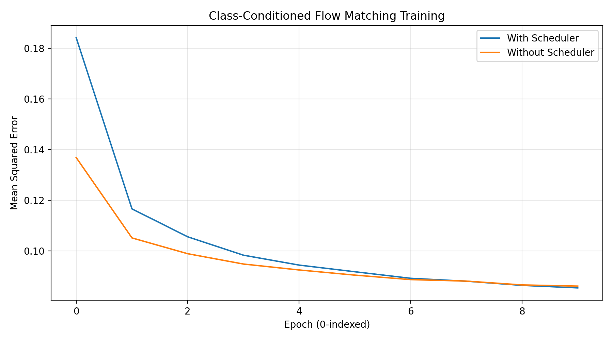
B 2.6 Sampling with Classifier-Free Guidance
Four digit instances per class and a no-scheduler ablation.
Method & Implementation
I generated four samples for each digit label 0–9, using conditional and unconditional velocity predictions and CFG at guidance scale 5.0. Sampling uses 300 Euler steps. Matching seeds were used to compare epochs and training strategies.
CFG γ=5; 300 Euler steps; 4 seeds × 10 classes; matched seeds for comparisons.
Results & Discussion
Class alignment becomes markedly stronger from epoch 1 to epochs 5 and 10: all ten columns are more recognizable. The no-scheduler checkpoint also generates clear digit classes at epoch 10 and appears visually competitive, although the small visual comparison alone does not establish a definitive winner.
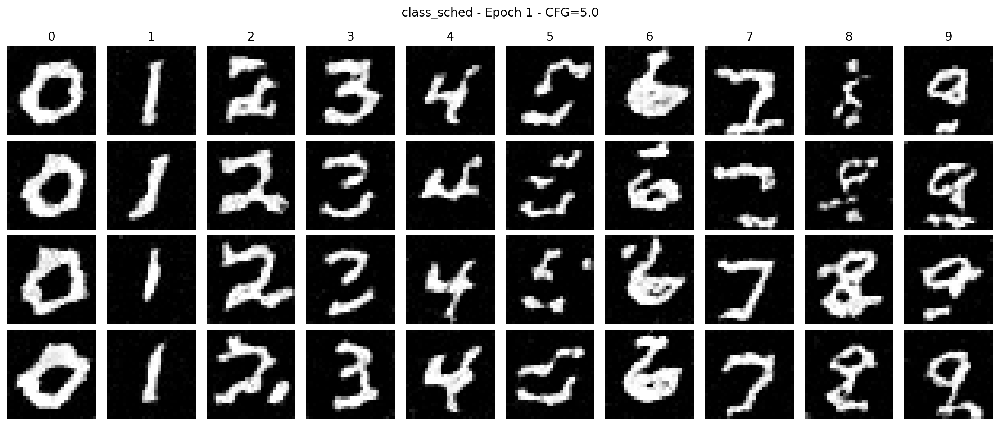
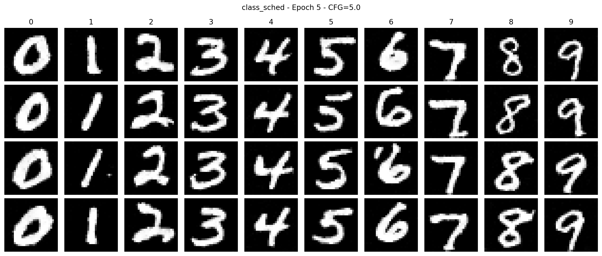
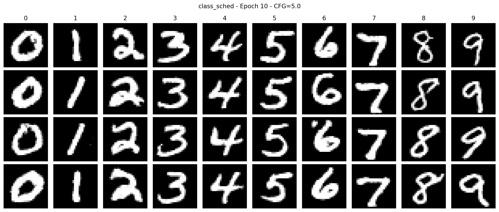
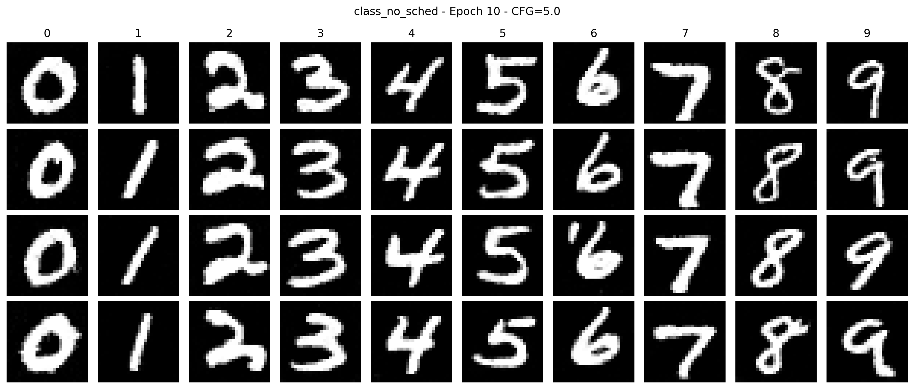